model {
lambda ~ multi_normal(meanLambda, covLambda); // Prior for item discrimination/factor loadings
mu ~ multi_normal(meanMu, covMu); // Prior for item intercepts
theta ~ normal(0, 1); // Prior for latent variable (with mean/sd specified)
for (item in 1:nItems){
Y[item] ~ binomial(maxItem[item], inv_logit(mu[item] + lambda[item]*theta));
}
}Generalized Measurement Models: Modeling Observed Polytomous Data
Lecture 4d
Today’s Lecture Objectives
- Show how to estimate unidimensional latent variable models with polytomous data*
- Also known as Polytomous Item Repsonse Theory (IRT) or Item Factor Analysis (IFA) models
- Distributions appropriate for polytomous (discrete; data with lower/upper limits)
Example Data: Conspiracy Theories
Today’s example is from a bootstrap resample of 177 undergraduate students at a large state university in the Midwest. The survey was a measure of 10 questions about their beliefs in various conspiracy theories that were being passed around the internet in the early 2010s. Additionally, gender was included in the survey. All items responses were on a 5- point Likert scale with:
- Strongly Disagree
- Disagree
- Neither Agree or Disagree
- Agree
- Strongly Agree
Please note, the purpose of this survey was to study individual beliefs regarding conspiracies. The questions can provoke some strong emotions given the world we live in currently. All questions were approved by university IRB prior to their use.
Our purpose in using this instrument is to provide a context that we all may find relevant as many of these conspiracy theories are still prevalent today.
Conspiracy Theory Questions 1-5
Questions:
- The U.S. invasion of Iraq was not part of a campaign to fight terrorism, but was driven by oil companies and Jews in the U.S. and Israel.
- Certain U.S. government officials planned the attacks of September 11, 2001 because they wanted the United States to go to war in the Middle East.
- President Barack Obama was not really born in the United States and does not have an authentic Hawaiian birth certificate.
- The current financial crisis was secretly orchestrated by a small group of Wall Street bankers to extend the power of the Federal Reserve and further their control of the world’s economy.
- Vapor trails left by aircraft are actually chemical agents deliberately sprayed in a clandestine program directed by government officials.
Conspiracy Theory Questions 6-10
Questions:
- Billionaire George Soros is behind a hidden plot to destabilize the American government, take control of the media, and put the world under his control.
- The U.S. government is mandating the switch to compact fluorescent light bulbs because such lights make people more obedient and easier to control.
- Government officials are covertly Building a 12-lane "NAFTA superhighway" that runs from Mexico to Canada through America’s heartland.
- Government officials purposely developed and spread drugs like crack-cocaine and diseases like AIDS in order to destroy the African American community.
- God sent Hurricane Katrina to punish America for its sins.
From Previous Lectures: CFA (Normal Outcomes)
For comparisons today, we will be using the model where we assumed each outcome was (conditionally) normally distributed:
For an item \(i\) the model is:
\[ \begin{array}{cc} Y_{pi} = \mu_i + \lambda_i \theta_p + e_{p,i}; & e_{p,i} \sim N\left(0, \psi_i^2 \right) \\ \end{array} \]
Recall that this assumption wasn’t a good one as the type of data (discrete, bounded, some multimodality) did not match the normal distribution assumption
Plotting CFA (Normal Outcome) Results

Polytomous Data Distributions
Polytomous Data Characteristics
As we have done with each observed variable, we must decide which distribution to use
- To do this, we need to map the characteristics of our data on to distributions that share those characteristics
Our observed data:
- Discrete responses
- Small set of known categories: \({1, 2, 3, 4, 5}\)
- Some observed item responses may be multimodal
Choice of distribution must match
- Be capable of modeling a small set of known categories
- Discrete distribution
- Limited number of categories (with fixed upper bound)
- Possible multimodality
Discrete Data Distributions
Stan has a list of distributions for bounded discrete data: https://mc-stan.org/docs/functions-reference/bounded-discrete-distributions.html
- Binomial distribution
- Pro: Easy to use/code
- Con: Unimodal distribution
- Beta-binomial distribution
- Not often used in psychometrics (but could be)
- Generalizes binomial distribution to have different probability for each trial
- Hypergeometric distribution
- Not often used in psychometrics
- Categorical distribution (sometimes called multinomial)
- Most frequently used
- Base distribution for graded response, partial credit, and nominal response models
- Discrete range distribution (sometimes called uniform)
- Not useful–doesn’t have much information about latent variables
Binomial Distribution Models
Binomial Distribution Models
The binomial distribution is one of the easiest to use for polytomous items
- However, it assumes the distribution of responses are unimodal
Binomial probability mass function (i.e., pdf):
\[P(Y = y) = {n \choose y} p^y \left(1-p \right)^{(n-y)} \]
Parameters:
- \(n\) – “number of trials” (range: \(n \in \{0, 1, \ldots\}\))
- \(y\) – “number of successes” out of \(n\) “trials” (range: \(y \in \{0, 1, \ldots, n\}\))
- \(p\) – probability of “success” (range: \([0, 1]\))
Mean: \(np\)
Variance: \(np(1-p)\)
Adapting the Binomial for Item Response Models
Although it doesn’t seem like our items fit with a binomial, we can actually use this distribution
- Item response: number of successes \(y_i\)
- Needed: recode data so that lowest category is \(0\) (subtract one from each item)
- Highest (recoded) item response: number of trials \(n\)
- For all our items, once recoded, \(n_i=4\) (\(\forall i\))
- Then, use a link function to model each item’s \(p_i\) as a function of the latent trait:
\[p_i = \frac{\exp\left(\mu_i + \lambda_i \theta_p\right)}{1+\exp\left(\mu_i + \lambda_i \theta_p \right)}\]
Note:
- Shown with a logit link function (but could be any link)
- Shown in slope/intercept form (but could be discrimination/difficulty for unidimensional items)
- Could also include asymptote parameters (\(c_i\) or \(d_i\))
Binomial Item Repsonse Model
The item response model, put into the PDF of the binomial is then:
\[P(Y_{pi} \mid \theta_p) = {n_i \choose Y_{pi}} \left(\frac{\exp\left(\mu_i + \lambda_i \theta_p \right)}{1+\exp\left(\mu_i + \lambda_i \theta_p \right)}\right)^{Y_{pi}} \left(1-\left(\frac{\exp\left(\mu_i + \lambda_i \theta_p \right)}{1+\exp\left(\mu_i + \lambda_i \theta_p \right)}\right) \right)^{(n_i-Y_{pi})} \]
Further, we can use the same priors as before on each of our item parameters
- \(\mu_i\): Normal prior \(N(0, 1000)\)
- \(\lambda_i\) Normal prior \(N(0, 1000)\)
Likewise, we can identify the scale of the latent variable as before, too:
- \(\theta_p \sim N(0,1)\)
Estimating the Binomial Model in Stan
Here, the binomial function has two arguments:
- The first (
maxItem[item]) is the number of “trials” \(n_i\) (here, our maximum score minus one) - The second
inv_logit(mu[item] + lambda[item]*theta)is the probability from our model (\(p_i\))
The data Y[item] must be:
- Type: integer
- Range: 0 through
maxItem[item]
Binomial Model Parameters Block
No changes from any of our previous slope/intercept models
Binomial Model Data Block
data {
int<lower=0> nObs; // number of observations
int<lower=0> nItems; // number of items
array[nItems] int<lower=0> maxItem;
array[nItems, nObs] int<lower=0> Y; // item responses in an array
vector[nItems] meanMu; // prior mean vector for intercept parameters
matrix[nItems, nItems] covMu; // prior covariance matrix for intercept parameters
vector[nItems] meanLambda; // prior mean vector for discrimination parameters
matrix[nItems, nItems] covLambda; // prior covariance matrix for discrimination parameters
}Note:
- Need to supply
maxItem(maximum score minus one for each item) - The data are the same (integer) as in the binary/dichotomous items syntax
Preparing Data for Stan
Binomial Model Stan Call
# building standardized sum scores to initialize latent variable
sumScores = rowSums(conspiracyItems)
thetaInit = (sumScores - mean(sumScores))/sd(sumScores)
modelBinomial_samples = modelBinomial_stan$sample(
data = modelBinomial_data,
seed = 12112022,
chains = 4,
parallel_chains = 4,
iter_warmup = 5000,
iter_sampling = 5000,
init = function() list(lambda = rnorm(n = nItems, mean = 10, sd = 2),
theta = rnorm(n = nObs, mean = thetaInit, sd = 0))
)Binomial Model Results
[1] 1.002976# A tibble: 20 × 10
variable mean median sd mad q5 q95 rhat ess_bulk ess_tail
<chr> <dbl> <dbl> <dbl> <dbl> <dbl> <dbl> <dbl> <dbl> <dbl>
1 mu[1] -0.843 -0.841 0.127 0.126 -1.06 -0.640 1.00 2810. 7189.
2 mu[2] -1.84 -1.83 0.215 0.212 -2.20 -1.50 1.00 2471. 6004.
3 mu[3] -2.00 -1.99 0.224 0.222 -2.38 -1.65 1.00 2582. 6063.
4 mu[4] -1.73 -1.72 0.208 0.206 -2.09 -1.40 1.00 2364. 5046.
5 mu[5] -2.00 -1.99 0.251 0.248 -2.43 -1.61 1.00 2437. 5398.
6 mu[6] -2.10 -2.09 0.245 0.244 -2.52 -1.72 1.00 2459. 5679.
7 mu[7] -2.44 -2.43 0.265 0.262 -2.91 -2.04 1.00 2769. 6669.
8 mu[8] -2.16 -2.15 0.241 0.241 -2.57 -1.78 1.00 2419. 6171.
9 mu[9] -2.40 -2.39 0.280 0.276 -2.89 -1.97 1.00 2705. 6829.
10 mu[10] -3.98 -3.94 0.522 0.504 -4.91 -3.20 1.00 3369. 6516.
11 lambda[1] 1.11 1.11 0.148 0.146 0.884 1.37 1.00 5282. 8924.
12 lambda[2] 1.91 1.89 0.243 0.240 1.53 2.33 1.00 4346. 7607.
13 lambda[3] 1.93 1.91 0.258 0.254 1.54 2.38 1.00 4071. 6938.
14 lambda[4] 1.90 1.89 0.235 0.234 1.53 2.31 1.00 3895. 7366.
15 lambda[5] 2.29 2.27 0.287 0.284 1.84 2.78 1.00 3687. 6487.
16 lambda[6] 2.16 2.14 0.275 0.275 1.73 2.64 1.00 3770. 6818.
17 lambda[7] 2.14 2.12 0.299 0.294 1.68 2.66 1.00 4269. 7491.
18 lambda[8] 2.09 2.07 0.273 0.269 1.67 2.56 1.00 3935. 7073.
19 lambda[9] 2.35 2.33 0.318 0.311 1.87 2.91 1.00 4061. 6669.
20 lambda[10] 3.43 3.38 0.565 0.550 2.58 4.43 1.00 4189. 6370.Option Characteristic Curves
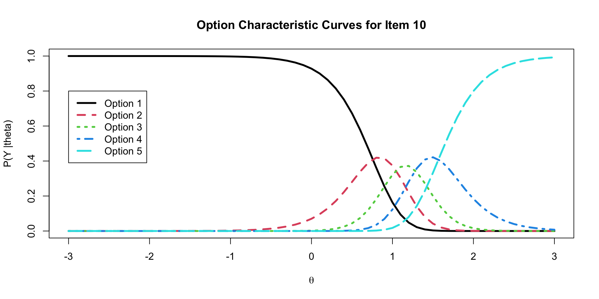ICC Plots
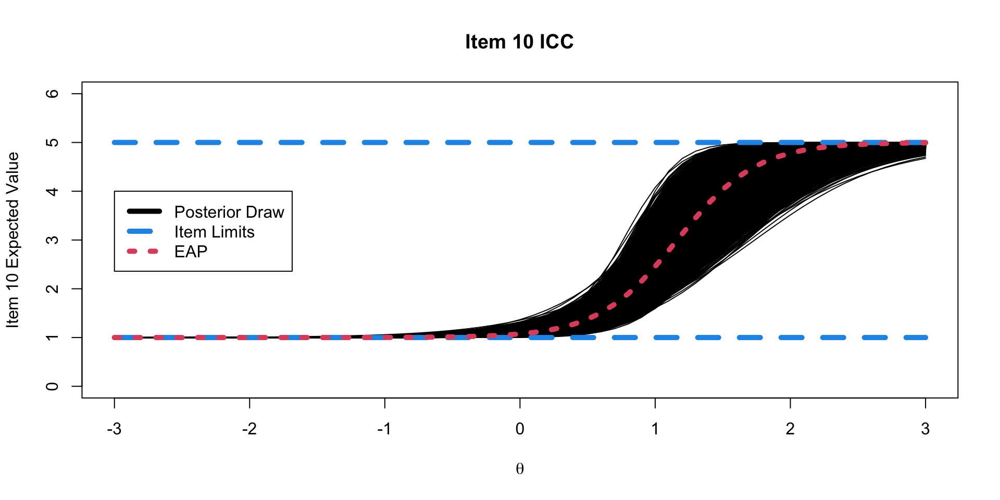Investigating Latent Variable Estimates

Comparing Two Latent Variable Posterior Distributions

Comparing Latent Variable Posterior Mean and SDs
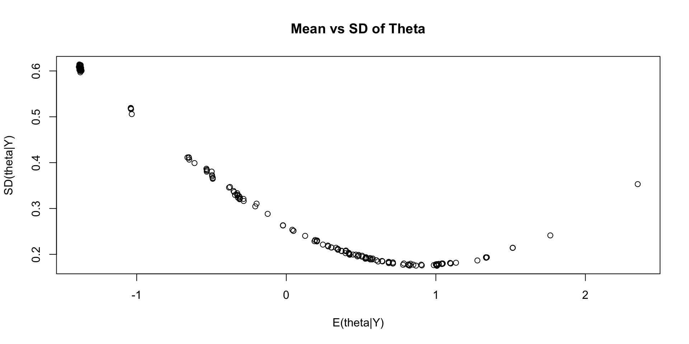Comparing EAP Estimates with Sum Scores
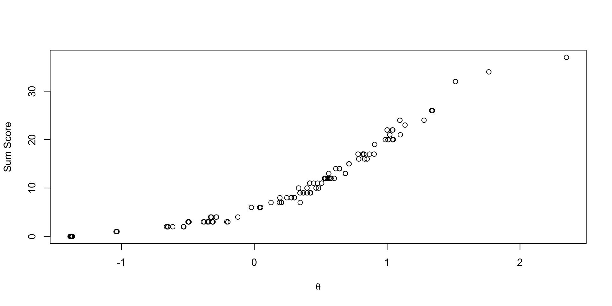Comparing Thetas: Binomial vs Normal
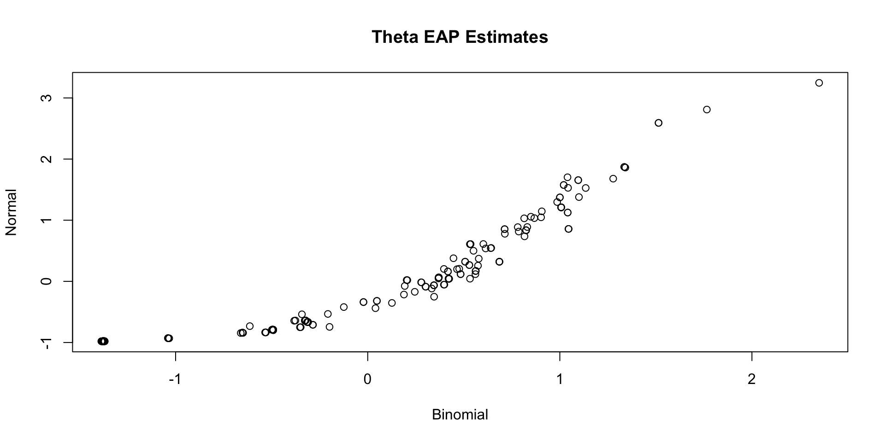Categorical/Multinomial Distribution Models
Categorical/Multinomial Distribution Models
Although the binomial distribution is easy, it may not fit our data well
- Instead, we can use the categorical (sometimes called multinomial) distribution, with pmf (pdf):
\[P(Y = y) = \frac{n!}{y_1! \cdots y_C!}p_1^{y_1}\cdots p_C^{y_C}\]
Here:
- \(n\): number of “trials”
- \(y_c\): number of events in each of \(c\) categories (\(c \in \{1, \ldots, C\}\); \(\sum_c y_c = n\))
- \(p_c\): probability of observing an event in category \(c\)
Adapting the Multinomial Distribution for Item Response Models
With some definitions, we can make a multinomial distribution into one we can use for polytomous item response models
- The number of “trials” is set to one for all items \(n_i=1\) (\(\forall i\))
- With \(n_i = 1\), this is called the categorical distribution
\[P(Y_{pi} \mid \theta_p) = p_{i1}^{I(y_{pi}=1)}\cdots p_{iC_i}^{I(y_{pi}=C_i)}\]
- The number of categories is equal to the number of options on an item (\(C_i\))
- The item response model is specified for the set of probabilities \(p_{ic}\), with \(\sum_c p_{ic}=1\)
- Then, use a link function to model each item’s set of \(p_{ic}\) as a function of the latent trait
Choices for Models for Probability of Each Category \(p_{ic}\)
The most-frequently used polytomous item response models all use the categorical distribution for observed data
- They differ in how the model function builds the conditional response probabilities
- Graded response models: set of ordered intercepts (or thresholds) and a single loading
- Called proportional odds models in categorical data analysis
- Partial credit models: set of unordered difficulty parameters and a single loading
- Nominal response models: set of unordered intercepts and set of loadings
- Called generalized logit models in categorical data analysis
- Graded response models: set of ordered intercepts (or thresholds) and a single loading
- Terminology note:
- Terms graded response and partial credit come from educational measurement
- Data need not be graded response/partial credit to you
- Terms graded response and partial credit come from educational measurement
Graded Response Model
For an item \(Y_{i,c_i}\) with ordered categories for response options \(c_i \in \left\{1, \ldots, C_i\right\}\), the graded response model is an ordered logistic regression model where:
\[P\left(Y_{i{c_i}} = c_i \mid \theta \right) = P^*\left(Y_{i{c_i} } \geq c_i-1 \mid \theta \right) - P^*\left(Y_{i{c_i}} \geq c_i \mid \theta \right) \]
Where:
\[P^*\left(Y_{i{c}} \geq c_i \mid \theta \right) = \frac{\exp(\mu_{ic}+\lambda_i\theta_p)}{1+\exp(\mu_{ic}+\lambda_i\theta_p)}\]
With:
- \(C_i-1\) Ordered intercepts: \(\mu_1 > \mu_2 > \ldots > \mu_{C_i-1}\)
- \(P^*\left(Y_{i1} \geq 1 \mid \theta \right) = 1\)
- \(P^*\left(Y_{ic_i} \geq C_i+1 \mid \theta \right) = 0\)
Estimating the Graded Response Model in Stan
model {
lambda ~ multi_normal(meanLambda, covLambda); // Prior for item discrimination/factor loadings
theta ~ normal(0, 1); // Prior for latent variable (with mean/sd specified)
for (item in 1:nItems){
thr[item] ~ multi_normal(meanThr[item], covThr[item]); // Prior for item intercepts
Y[item] ~ ordered_logistic(lambda[item]*theta, thr[item]);
}
}Notes:
ordered_logisticis a built in Stan function that makes the model easy to implement- Instead of intercepts, however, it uses thresholds: \(\tau_{ic} = -\mu_{ic}\)
- First argument is the linear predictor (the non-intercept portion of the model)
- Second argument is the set of thresholds for the item
- The function expects the responses of \(Y\) to start at one and go to maxCategory (\(Y_{pi}\) {1, , C_i})
- No transformation needed to data (unless some categories have zero observations)
Graded Response Model parameters Block
Notes:
- Threshold parameters:
array[nItems] ordered[maxCategory-1] thr;- Is an array (each item has maxCategory-1) parameters
- Is of type
ordered: Automatically ensures order is maintained \[ \tau_{i1} < \tau_{i2} < \ldots < \tau_{iC-1}\]
Graded Response Model generated quantities Block
We use generated quantities to convert threshold parameters into intercepts
Graded Response Model data block
data {
int<lower=0> nObs; // number of observations
int<lower=0> nItems; // number of items
int<lower=0> maxCategory;
array[nItems, nObs] int<lower=1, upper=5> Y; // item responses in an array
array[nItems] vector[maxCategory-1] meanThr; // prior mean vector for intercept parameters
array[nItems] matrix[maxCategory-1, maxCategory-1] covThr; // prior covariance matrix for intercept parameters
vector[nItems] meanLambda; // prior mean vector for discrimination parameters
matrix[nItems, nItems] covLambda; // prior covariance matrix for discrimination parameters
}Notes:
- The input for the prior mean/covariance matrix for threshold parameters is now an array (one mean vector and covariance matrix per item)
Graded Response Model Data Preparation
To match the array for input for the threshold hyperparameter matrices, a little data manipulation is needed
# item threshold hyperparameters
thrMeanHyperParameter = 0
thrMeanVecHP = rep(thrMeanHyperParameter, maxCategory-1)
thrMeanMatrix = NULL
for (item in 1:nItems){
thrMeanMatrix = rbind(thrMeanMatrix, thrMeanVecHP)
}
thrVarianceHyperParameter = 1000
thrCovarianceMatrixHP = diag(x = thrVarianceHyperParameter, nrow = maxCategory-1)
thrCovArray = array(data = 0, dim = c(nItems, maxCategory-1, maxCategory-1))
for (item in 1:nItems){
thrCovArray[item, , ] = diag(x = thrVarianceHyperParameter, nrow = maxCategory-1)
}- The R array matches stan’s array type
Graded Response Model Stan Call
# building standardized sum scores to initialize latent variable
sumScores = rowSums(conspiracyItems)
thetaInit = (sumScores - mean(sumScores))/sd(sumScores)
modelOrderedLogit_samples = modelOrderedLogit_stan$sample(
data = modelOrderedLogit_data,
seed = 121120221,
chains = 4,
parallel_chains = 4,
iter_warmup = 5000,
iter_sampling = 5000,
init = function() list(lambda = rnorm(n = nItems, mean = 10, sd = 2),
theta = rnorm(n = nObs, mean = thetaInit, sd = 0))
)Note: Using positive starting values for the \(\lambda\) parameters
Graded Response Model Results
[1] 1.003616# item parameter results
print(modelOrderedLogit_samples$summary(variables = c("lambda", "mu")) ,n=Inf)# A tibble: 50 × 10
variable mean median sd mad q5 q95 rhat ess_bulk
<chr> <dbl> <dbl> <dbl> <dbl> <dbl> <dbl> <dbl> <dbl>
1 lambda[1] 2.13 2.12 0.290 0.287 1.68 2.63 1.00 4987.
2 lambda[2] 3.07 3.05 0.438 0.434 2.40 3.83 1.00 5015.
3 lambda[3] 2.59 2.56 0.392 0.383 2.00 3.28 1.00 5478.
4 lambda[4] 3.11 3.08 0.432 0.420 2.45 3.86 1.00 4763.
5 lambda[5] 5.01 4.95 0.785 0.756 3.84 6.41 1.00 4730.
6 lambda[6] 5.04 4.98 0.771 0.745 3.88 6.39 1.00 4061.
7 lambda[7] 3.24 3.21 0.495 0.495 2.49 4.11 1.00 5097.
8 lambda[8] 5.34 5.26 0.873 0.825 4.06 6.92 1.00 4450.
9 lambda[9] 3.16 3.12 0.490 0.488 2.42 4.02 1.00 5360.
10 lambda[10] 2.66 2.62 0.483 0.461 1.94 3.51 1.00 5942.
11 mu[1,1] 1.49 1.48 0.283 0.282 1.04 1.97 1.00 2680.
12 mu[2,1] 0.171 0.173 0.326 0.321 -0.367 0.706 1.00 1676.
13 mu[3,1] -0.454 -0.446 0.302 0.298 -0.963 0.0257 1.00 1995.
14 mu[4,1] 0.345 0.343 0.332 0.328 -0.201 0.889 1.00 1692.
15 mu[5,1] 0.325 0.323 0.484 0.473 -0.473 1.13 1.00 1401.
16 mu[6,1] -0.0421 -0.0301 0.491 0.481 -0.862 0.739 1.00 1369.
17 mu[7,1] -0.818 -0.809 0.357 0.353 -1.42 -0.247 1.00 1739.
18 mu[8,1] -0.392 -0.377 0.523 0.508 -1.28 0.434 1.00 1411.
19 mu[9,1] -0.748 -0.738 0.350 0.346 -1.34 -0.191 1.00 1764.
20 mu[10,1] -1.98 -1.95 0.392 0.380 -2.66 -1.38 1.00 2800.
21 mu[1,2] -0.655 -0.651 0.254 0.254 -1.08 -0.242 1.00 2198.
22 mu[2,2] -2.22 -2.20 0.392 0.382 -2.88 -1.61 1.00 2334.
23 mu[3,2] -1.67 -1.66 0.331 0.325 -2.24 -1.16 1.00 2206.
24 mu[4,2] -1.80 -1.79 0.365 0.362 -2.41 -1.23 1.00 1972.
25 mu[5,2] -3.19 -3.15 0.623 0.603 -4.27 -2.23 1.00 2149.
26 mu[6,2] -3.26 -3.22 0.609 0.599 -4.32 -2.32 1.00 2061.
27 mu[7,2] -2.74 -2.71 0.433 0.428 -3.49 -2.06 1.00 2467.
28 mu[8,2] -3.27 -3.23 0.645 0.620 -4.40 -2.28 1.00 1900.
29 mu[9,2] -2.67 -2.65 0.433 0.425 -3.43 -1.99 1.00 2514.
30 mu[10,2] -3.25 -3.23 0.464 0.452 -4.06 -2.54 1.00 3755.
31 mu[1,3] -2.51 -2.49 0.312 0.310 -3.03 -2.00 1.00 3371.
32 mu[2,3] -4.14 -4.12 0.503 0.490 -5.01 -3.36 1.00 4110.
33 mu[3,3] -4.37 -4.34 0.522 0.517 -5.28 -3.56 1.00 4746.
34 mu[4,3] -4.60 -4.58 0.535 0.531 -5.50 -3.76 1.00 3697.
35 mu[5,3] -6.04 -5.97 0.860 0.838 -7.55 -4.74 1.00 3624.
36 mu[6,3] -7.47 -7.40 1.01 1.00 -9.25 -5.96 1.00 4391.
37 mu[7,3] -5.13 -5.09 0.637 0.631 -6.23 -4.14 1.00 4475.
38 mu[8,3] -9.01 -8.90 1.33 1.28 -11.4 -7.04 1.00 4611.
39 mu[9,3] -4.01 -3.98 0.523 0.517 -4.92 -3.19 1.00 3236.
40 mu[10,3] -4.48 -4.45 0.567 0.561 -5.47 -3.61 1.00 4649.
41 mu[1,4] -4.52 -4.49 0.506 0.499 -5.39 -3.73 1.00 7784.
42 mu[2,4] -5.77 -5.73 0.675 0.663 -6.94 -4.72 1.00 6791.
43 mu[3,4] -5.54 -5.50 0.665 0.663 -6.69 -4.52 1.00 7151.
44 mu[4,4] -5.57 -5.54 0.633 0.624 -6.64 -4.57 1.00 4726.
45 mu[5,4] -8.64 -8.54 1.18 1.15 -10.7 -6.84 1.00 5325.
46 mu[6,4] -10.4 -10.3 1.45 1.42 -13.0 -8.27 1.00 6629.
47 mu[7,4] -6.89 -6.84 0.876 0.866 -8.42 -5.55 1.00 6897.
48 mu[8,4] -12.1 -11.9 1.90 1.82 -15.5 -9.25 1.00 7223.
49 mu[9,4] -5.80 -5.76 0.712 0.710 -7.03 -4.69 1.00 5222.
50 mu[10,4] -4.75 -4.71 0.597 0.588 -5.78 -3.83 1.00 4952.
# ℹ 1 more variable: ess_tail <dbl>Graded Response Model Option Characteristic Curves
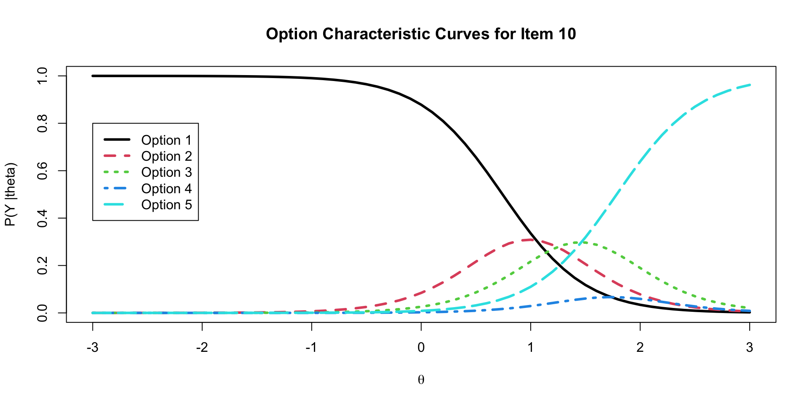Graded Response Model Item Characteristic Curves
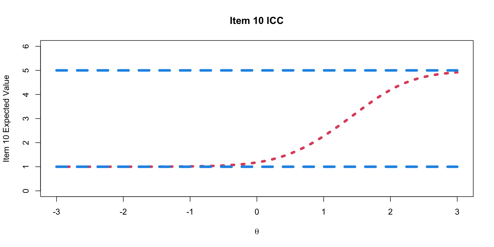Investigating Latent Variables
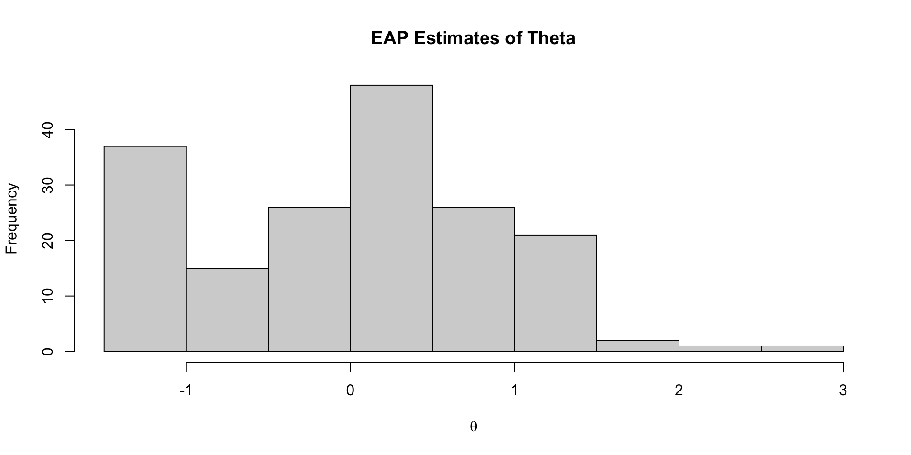Comparing Two Latent Variable Posterior Distributions
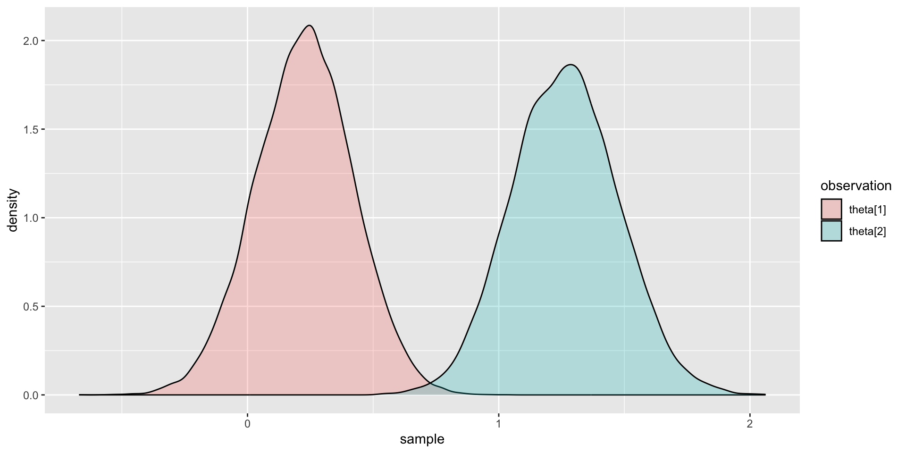Comparing Latent Variable EAP Estimates with Posterior SDs
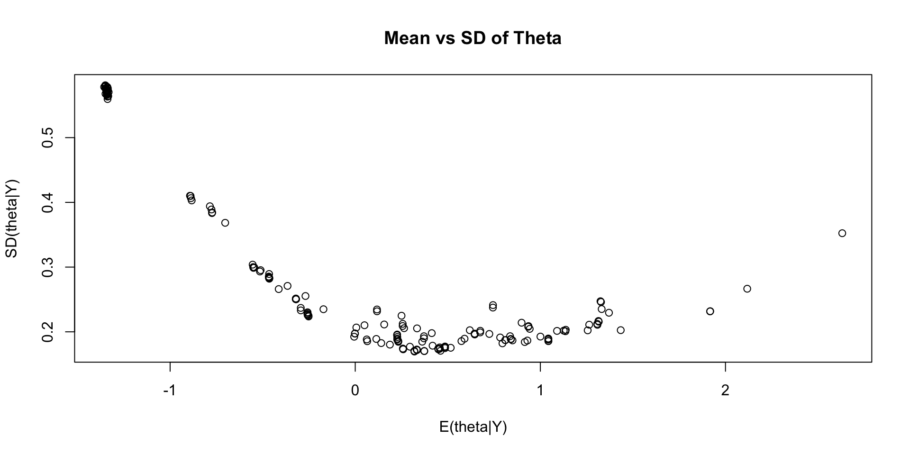Comparing Latent Variable EAP Estimates with Sum Scores
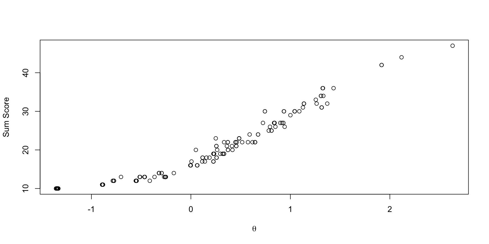Comparing Latent Variable Posterior Means: GRM vs CFA
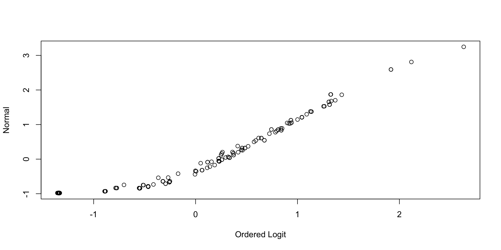Comparing Latent Variable Posterior SDs: GRM vs Normal
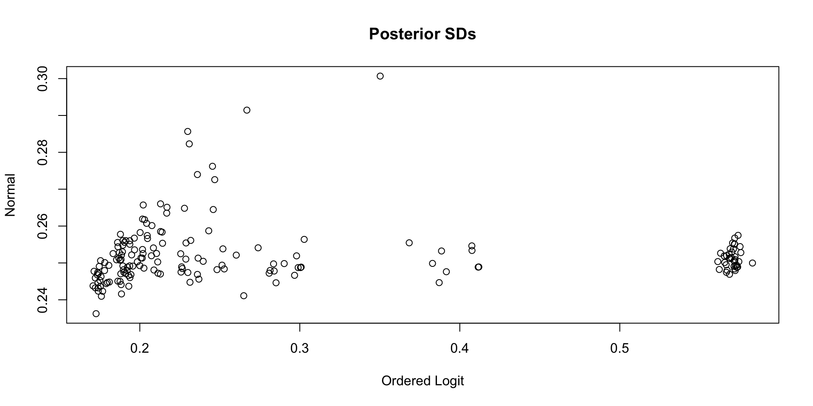Which Posterior SD is Larger: GRM vs. CFA
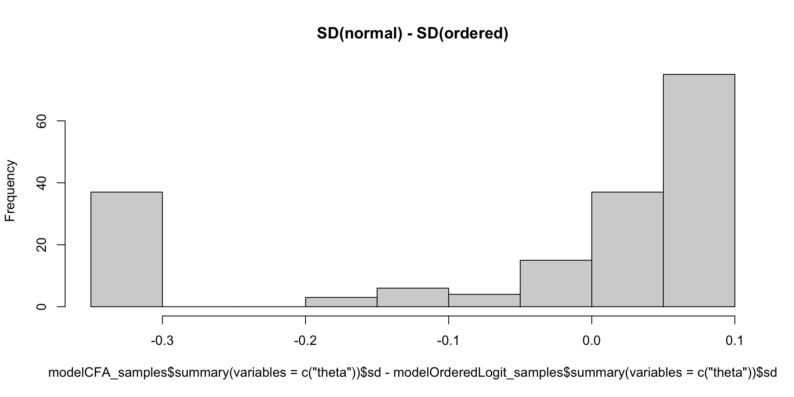Comparing Thetas: GRM vs Binomial
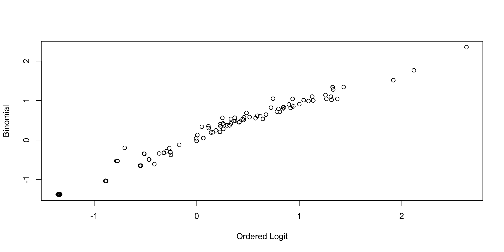Comparing Latent Variable Posterior SDs: GRM vs Binomial
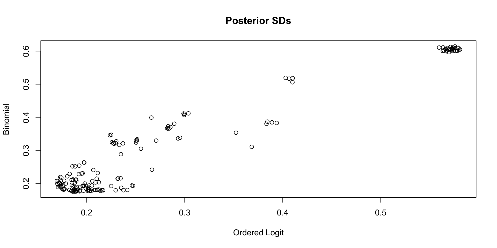Which Posterior SD is Larger: GRM vs. Binomial
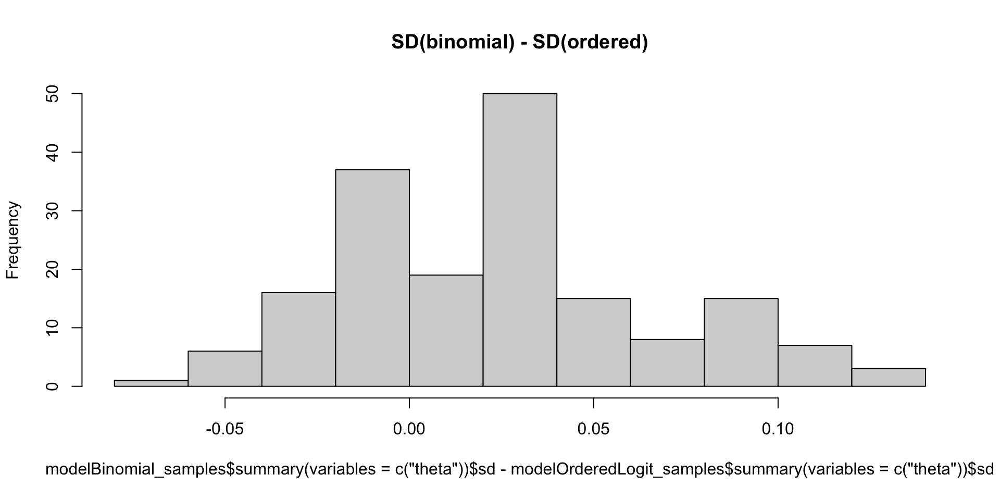Nominal Response Models (Generalized Logit Models)
Adapting the Multinomial Distribution for Item Response Models
With some definitions, we can make a multinomial distribution into one we can use for polytomous item response models
- The number of “trials” is set to one for all items \(n_i=1\) (\(\forall i\))
- With \(n_i = 1\), this is called the categorical distribution
\[P(Y_{pi} \mid \theta_p) = p_{i1}^{I(y_{pi}=1)}\cdots p_{iC_i}^{I(y_{pi}=C_i)}\]
- The number of categories is equal to the number of options on an item (\(C_i\))
- The item response model is specified for the set of probabilities \(p_{ic}\), with \(\sum_c p_{ic}=1\)
- Then, use a link function to model each item’s set of \(p_{ic}\) as a function of the latent trait
Nominal Response Model (Generalized Logit Model)
The nominal response model is an ordered logistic regression model where:
\[P\left(Y_{ic } \mid \theta \right) = \frac{\exp(\mu_{ic}+\lambda_{ic}\theta_p)}{\sum_{c=1}^{C_i} \exp(\mu_{ic}+\lambda_{ic}\theta_p)}\]
Where:
- One constraint per parameter (one of these options):
- Sum to zero: \(\sum_{c=1}^{C_i} \mu_{ic} = 0\) and \(\sum_{c=1}^{C_i} \lambda_{ic} = 0\)
- Fix one category’s parameters to zero: \(\mu_{iC_{i}} = 0\) and \(\lambda_{iC_{i}} = 0\)
Estimating the NRM in Stan
model {
vector[maxCategory] probVec;
theta ~ normal(0,1);
for (item in 1:nItems){
initMu[item] ~ multi_normal(meanMu[item], covMu[item]); // Prior for item intercepts
initLambda[item] ~ multi_normal(meanLambda[item], covLambda[item]); // Prior for item loadings
for (obs in 1:nObs) {
for (category in 1:maxCategory){
probVec[category] = mu[item, category] + lambda[item, category]*theta[obs];
}
Y[item, obs] ~ categorical_logit(probVec);
}
}
}- Probability vector is built category-by-category
- Code is not vectorized (takes longer to run)
categorical_logitmodel takes input, applies inverse logit function, evaluates categorical distribution pmf- Set-to-zero constraints used:
initMuandinitLambdahave only estimated values in them- Will build
muandlambdain transformed parameters block
Nominal Response Model parameters Block
Set-to-zero constraints used:
initMuandinitLambdahave only estimated values in them- Will build
muandlambdain transformed parameters block
Nominal Response Model transformed parameters Block
transformed parameters {
array[nItems] vector[maxCategory] mu;
array[nItems] vector[maxCategory] lambda;
for (item in 1:nItems){
mu[item, 2:maxCategory] = initMu[item, 1:(maxCategory-1)];
mu[item, 1] = 0.0; // setting one category's intercept to zero
lambda[item, 2:maxCategory] = initLambda[item, 1:(maxCategory-1)];
lambda[item, 1] = 0.0; // setting one category's lambda to zero
}
}Notes:
- Here, we set the first category’s \(\mu_{i1}\) and \(\lambda_{i1}\) to zero
- We use
muandlambdafor the model itself (notinitMuorinitLambda)
Nominal Response Model data Block
data {
int maxCategory;
int nObs;
int nItems;
array[nItems, nObs] int Y;
array[nItems] vector[maxCategory-1] meanMu; // prior mean vector for intercept parameters
array[nItems] matrix[maxCategory-1, maxCategory-1] covMu; // prior covariance matrix for intercept parameters
array[nItems] vector[maxCategory-1] meanLambda; // prior mean vector for discrimination parameters
array[nItems] matrix[maxCategory-1, maxCategory-1] covLambda; // prior covariance matrix for discrimination parameters
}Almost the same as graded response model
- Lambda now needs an array
Nominal Response Model Data Preparation
# Data needs: successive integers from 1 to highest number (recode if not consistent)
maxCategory = 5
# data dimensions
nObs = nrow(conspiracyItems)
nItems = ncol(conspiracyItems)
# item threshold hyperparameters
muMeanHyperParameter = 0
muMeanVecHP = rep(muMeanHyperParameter, maxCategory-1)
muMeanMatrix = NULL
for (item in 1:nItems){
muMeanMatrix = rbind(muMeanMatrix, muMeanVecHP)
}
muVarianceHyperParameter = 1000
muCovarianceMatrixHP = diag(x = muVarianceHyperParameter, nrow = maxCategory-1)
muCovArray = array(data = 0, dim = c(nItems, maxCategory-1, maxCategory-1))
for (item in 1:nItems){
muCovArray[item, , ] = diag(x = muVarianceHyperParameter, nrow = maxCategory-1)
}
# item discrimination/factor loading hyperparameters
lambdaMeanHyperParameter = 0
lambdaMeanVecHP = rep(lambdaMeanHyperParameter, maxCategory-1)
lambdaMeanMatrix = NULL
for (item in 1:nItems){
lambdaMeanMatrix = rbind(lambdaMeanMatrix, lambdaMeanVecHP)
}
lambdaVarianceHyperParameter = 1000
lambdaCovarianceMatrixHP = diag(x = lambdaVarianceHyperParameter, nrow = maxCategory-1)
lambdaCovArray = array(data = 0, dim = c(nItems, maxCategory-1, maxCategory-1))
for (item in 1:nItems){
lambdaCovArray[item, , ] = diag(x = lambdaVarianceHyperParameter, nrow = maxCategory-1)
}
modelOrderedLogit_data = list(
nObs = nObs,
nItems = nItems,
maxCategory = maxCategory,
maxItem = maxItem,
Y = t(conspiracyItems),
meanMu = muMeanMatrix,
covMu = muCovArray,
meanLambda = lambdaMeanMatrix,
covLambda = lambdaCovArray
)Nominal Response Model Stan Call
Nominal Response Model Results
[1] 1.005214# A tibble: 100 × 10
variable mean median sd mad q5 q95 rhat ess_bulk
<chr> <dbl> <dbl> <dbl> <dbl> <dbl> <dbl> <dbl> <dbl>
1 mu[1,1] 0 0 0 0 0 0 NA NA
2 mu[2,1] 0 0 0 0 0 0 NA NA
3 mu[3,1] 0 0 0 0 0 0 NA NA
4 mu[4,1] 0 0 0 0 0 0 NA NA
5 mu[5,1] 0 0 0 0 0 0 NA NA
6 mu[6,1] 0 0 0 0 0 0 NA NA
7 mu[7,1] 0 0 0 0 0 0 NA NA
8 mu[8,1] 0 0 0 0 0 0 NA NA
9 mu[9,1] 0 0 0 0 0 0 NA NA
10 mu[10,1] 0 0 0 0 0 0 NA NA
11 mu[1,2] 1.10 1.08 0.296 0.290 0.626 1.61 1.00 1525.
12 mu[2,2] 0.390 0.387 0.254 0.252 -0.0174 0.818 1.00 2127.
13 mu[3,2] -0.481 -0.484 0.274 0.270 -0.933 -0.0282 1.00 2144.
14 mu[4,2] 0.574 0.569 0.283 0.282 0.116 1.04 1.00 1992.
15 mu[5,2] 0.661 0.666 0.266 0.266 0.228 1.10 1.00 1731.
16 mu[6,2] 0.653 0.648 0.282 0.278 0.186 1.12 1.00 2017.
17 mu[7,2] -0.302 -0.303 0.236 0.233 -0.692 0.0885 1.00 2130.
18 mu[8,2] 0.337 0.333 0.273 0.268 -0.113 0.795 1.00 1701.
19 mu[9,2] -0.325 -0.331 0.239 0.237 -0.714 0.0774 1.00 2344.
20 mu[10,2] -1.45 -1.44 0.263 0.263 -1.89 -1.04 1.00 2945.
21 mu[1,3] 0.970 0.966 0.306 0.306 0.469 1.48 1.00 1539.
22 mu[2,3] -0.689 -0.686 0.374 0.363 -1.32 -0.0943 1.00 1674.
23 mu[3,3] -0.197 -0.199 0.262 0.261 -0.631 0.231 0.999 2002.
24 mu[4,3] 0.179 0.176 0.336 0.343 -0.354 0.737 1.00 1708.
25 mu[5,3] -0.579 -0.567 0.405 0.389 -1.27 0.0553 1.00 1540.
26 mu[6,3] -0.0277 -0.0213 0.358 0.360 -0.628 0.538 1.00 1621.
27 mu[7,3] -1.14 -1.13 0.336 0.339 -1.70 -0.603 1.00 2479.
28 mu[8,3] -0.165 -0.153 0.354 0.347 -0.761 0.397 1.00 1365.
29 mu[9,3] -1.69 -1.67 0.412 0.394 -2.40 -1.02 1.00 2347.
30 mu[10,3] -2.37 -2.34 0.396 0.390 -3.08 -1.77 1.00 2816.
31 mu[1,4] 0.327 0.321 0.326 0.324 -0.196 0.865 1.00 1901.
32 mu[2,4] -1.10 -1.08 0.371 0.356 -1.73 -0.479 1.00 2740.
33 mu[3,4] -1.89 -1.88 0.398 0.393 -2.56 -1.26 1.00 3318.
34 mu[4,4] -1.30 -1.29 0.429 0.426 -2.02 -0.631 1.00 3163.
35 mu[5,4] -0.734 -0.725 0.371 0.374 -1.36 -0.141 1.00 2164.
36 mu[6,4] -1.10 -1.09 0.419 0.413 -1.83 -0.439 1.00 3066.
37 mu[7,4] -1.92 -1.91 0.394 0.387 -2.60 -1.31 1.00 3537.
38 mu[8,4] -1.76 -1.74 0.463 0.462 -2.55 -1.03 1.01 3203.
39 mu[9,4] -1.40 -1.39 0.324 0.317 -1.95 -0.883 1.00 3209.
40 mu[10,4] -3.23 -3.20 0.462 0.462 -4.04 -2.52 1.00 5040.
41 mu[1,5] -0.963 -0.944 0.458 0.464 -1.73 -0.239 1.00 2518.
42 mu[2,5] -1.48 -1.46 0.417 0.416 -2.18 -0.802 1.00 3275.
43 mu[3,5] -1.95 -1.94 0.430 0.422 -2.68 -1.27 1.00 3080.
44 mu[4,5] -1.05 -1.04 0.388 0.374 -1.70 -0.439 1.00 2821.
45 mu[5,5] -1.38 -1.37 0.441 0.450 -2.11 -0.687 1.00 2770.
46 mu[6,5] -1.76 -1.75 0.479 0.478 -2.57 -1.02 1.00 3908.
47 mu[7,5] -2.29 -2.27 0.443 0.429 -3.05 -1.59 1.00 3934.
48 mu[8,5] -2.13 -2.11 0.502 0.515 -2.99 -1.33 1.00 3392.
49 mu[9,5] -1.90 -1.88 0.381 0.379 -2.54 -1.30 1.00 3414.
50 mu[10,5] -2.19 -2.17 0.343 0.336 -2.78 -1.67 1.00 3431.
51 lambda[1,1] 0 0 0 0 0 0 NA NA
52 lambda[2,1] 0 0 0 0 0 0 NA NA
53 lambda[3,1] 0 0 0 0 0 0 NA NA
54 lambda[4,1] 0 0 0 0 0 0 NA NA
55 lambda[5,1] 0 0 0 0 0 0 NA NA
56 lambda[6,1] 0 0 0 0 0 0 NA NA
57 lambda[7,1] 0 0 0 0 0 0 NA NA
58 lambda[8,1] 0 0 0 0 0 0 NA NA
59 lambda[9,1] 0 0 0 0 0 0 NA NA
60 lambda[10,1] 0 0 0 0 0 0 NA NA
61 lambda[1,2] 1.21 1.20 0.237 0.234 0.834 1.61 1.00 1530.
62 lambda[2,2] 1.35 1.33 0.256 0.254 0.945 1.78 1.00 2337.
63 lambda[3,2] 1.59 1.58 0.295 0.301 1.12 2.09 1.00 2506.
64 lambda[4,2] 1.74 1.74 0.290 0.287 1.29 2.24 1.00 2373.
65 lambda[5,2] 1.60 1.59 0.276 0.281 1.14 2.05 1.00 2214.
66 lambda[6,2] 2.03 2.03 0.308 0.310 1.55 2.55 1.00 2341.
67 lambda[7,2] 1.44 1.43 0.270 0.263 1.02 1.90 1.00 2548.
68 lambda[8,2] 1.69 1.68 0.300 0.289 1.23 2.22 1.00 2839.
69 lambda[9,2] 1.37 1.36 0.266 0.264 0.944 1.82 1.00 2876.
70 lambda[10,2] 1.26 1.26 0.284 0.292 0.817 1.73 1.00 2977.
71 lambda[1,3] 1.93 1.93 0.283 0.277 1.47 2.41 1.00 1784.
72 lambda[2,3] 2.78 2.76 0.419 0.405 2.14 3.53 1.00 2198.
73 lambda[3,3] 1.80 1.79 0.291 0.291 1.34 2.29 1.00 2257.
74 lambda[4,3] 2.79 2.76 0.373 0.369 2.21 3.42 1.00 1881.
75 lambda[5,3] 3.34 3.33 0.440 0.434 2.64 4.10 1.00 2489.
76 lambda[6,3] 3.11 3.10 0.412 0.408 2.46 3.80 1.00 2618.
77 lambda[7,3] 2.28 2.26 0.372 0.366 1.71 2.94 1.00 2155.
78 lambda[8,3] 3.08 3.06 0.436 0.434 2.40 3.82 1.00 2016.
79 lambda[9,3] 2.54 2.53 0.411 0.401 1.91 3.23 1.00 2502.
80 lambda[10,3] 1.85 1.84 0.374 0.373 1.26 2.49 1.00 2340.
81 lambda[1,4] 1.47 1.47 0.291 0.284 1.01 1.96 1.00 2015.
82 lambda[2,4] 1.86 1.84 0.406 0.395 1.22 2.57 1.00 2966.
83 lambda[3,4] 1.60 1.59 0.422 0.426 0.927 2.31 1.00 3643.
84 lambda[4,4] 1.91 1.89 0.464 0.469 1.17 2.69 1.00 3453.
85 lambda[5,4] 2.27 2.25 0.426 0.423 1.59 2.99 1.00 2842.
86 lambda[6,4] 2.32 2.31 0.488 0.490 1.54 3.13 1.00 3223.
87 lambda[7,4] 1.65 1.63 0.425 0.424 0.974 2.38 1.00 3257.
88 lambda[8,4] 1.96 1.94 0.530 0.528 1.09 2.86 1.00 3107.
89 lambda[9,4] 1.57 1.56 0.372 0.363 0.986 2.21 1.00 2674.
90 lambda[10,4] 0.871 0.858 0.469 0.475 0.112 1.66 1.00 3828.
91 lambda[1,5] 2.10 2.08 0.440 0.425 1.41 2.87 1.00 2345.
92 lambda[2,5] 1.82 1.80 0.460 0.462 1.10 2.58 1.00 2596.
93 lambda[3,5] 1.77 1.76 0.440 0.444 1.05 2.49 1.00 2959.
94 lambda[4,5] 1.77 1.75 0.435 0.452 1.08 2.50 1.00 2859.
95 lambda[5,5] 2.13 2.10 0.518 0.521 1.31 3.03 1.00 2707.
96 lambda[6,5] 2.09 2.08 0.558 0.574 1.19 3.02 1.00 3564.
97 lambda[7,5] 1.57 1.56 0.463 0.474 0.837 2.33 1.00 2831.
98 lambda[8,5] 1.62 1.61 0.552 0.557 0.749 2.56 1.00 3291.
99 lambda[9,5] 1.50 1.50 0.421 0.419 0.823 2.21 1.00 2720.
100 lambda[10,5] 1.28 1.27 0.352 0.358 0.718 1.88 1.00 2758.
# ℹ 1 more variable: ess_tail <dbl>Comparing EAP Estimates with Posterior SDs
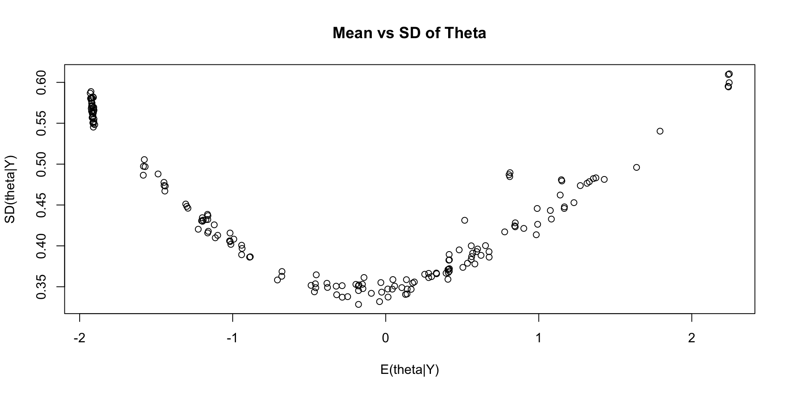Comparing EAP Estimates with Sum Scores
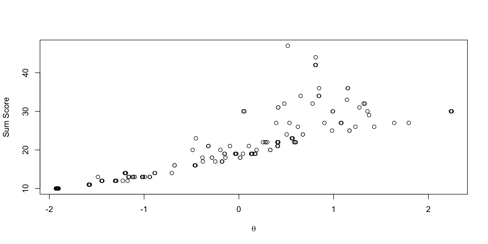Comparing Thetas: NRM vs Normal:
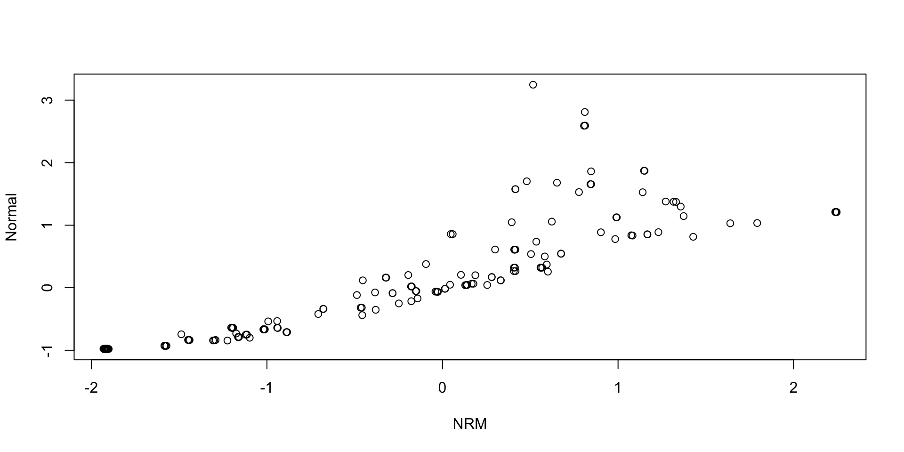Comparing Theta SDs: NRM vs Normal:
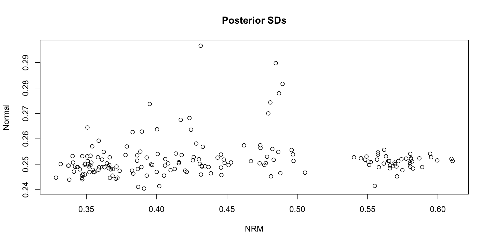Which SDs are bigger: NRM vs. Normal?
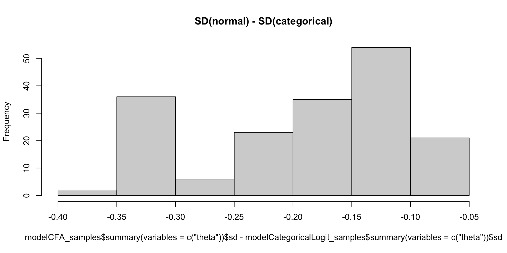Comparing Thetas: NRM vs GRM:
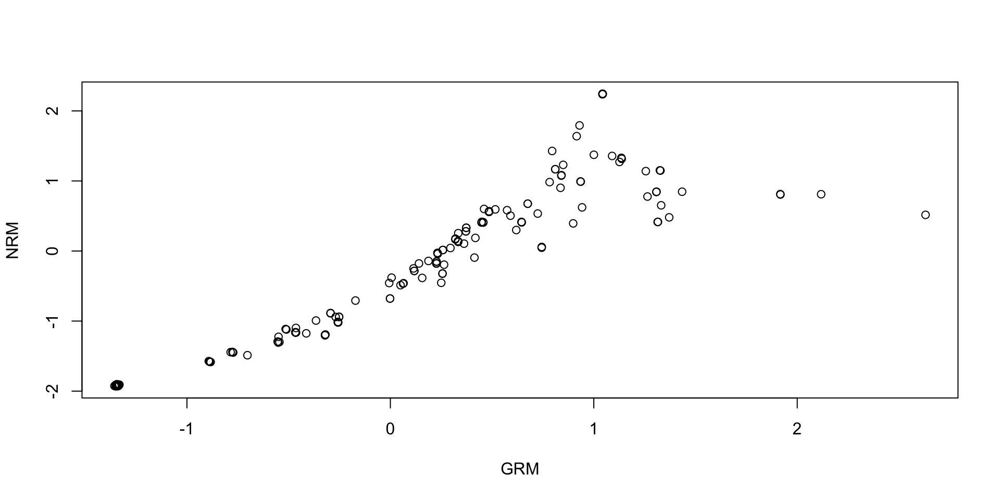Comparing Theta SDs: NRM vs GRM:
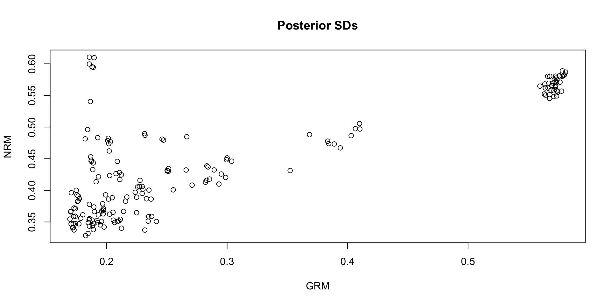Which SDs are bigger: NRM vs GRM?
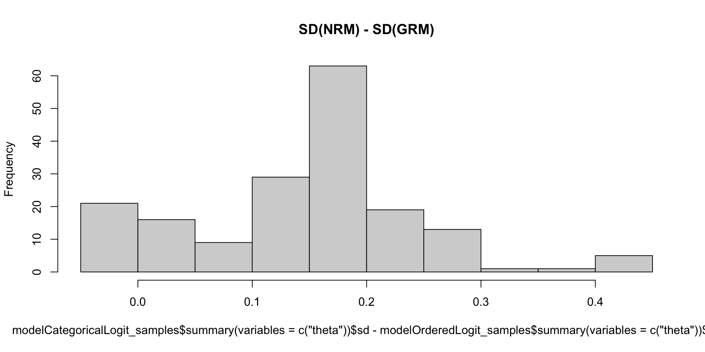Models With Different Types of Items
Models with Different Types of Items
Although often taught as one type of model that applies to all items, you can mix-and-match distributions
- Recall the posterior distribution of the latent variable \(\theta_p\)
- For each person, the model (data) likelihood function can be constructed so that each item’s conditional PDF is used:
\[f \left(\boldsymbol{Y}_{p} \mid \theta_p \right) = \prod_{i=1}^If \left(Y_{pi} \mid \theta_p \right)\]
Here, \(\prod_{i=1}^If \left(Y_{pi} \mid \theta_p \right)\) can be any distribution that you can build
Wrapping Up
Wrapping Up
- There are many different models for polytomous data
- Almost all use the categorical (multinomial with one trial) distribution
- What we say today is that the posterior SDs of the latent variables are larger with categorical models
- Much more uncertainty compared to normal models
- What we will need is model fit information to determine what fits best